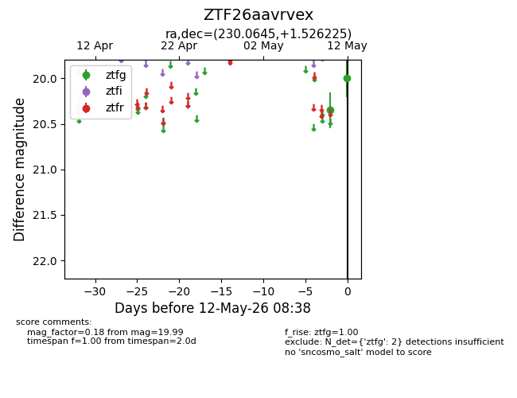
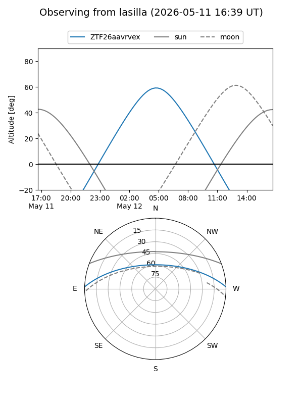
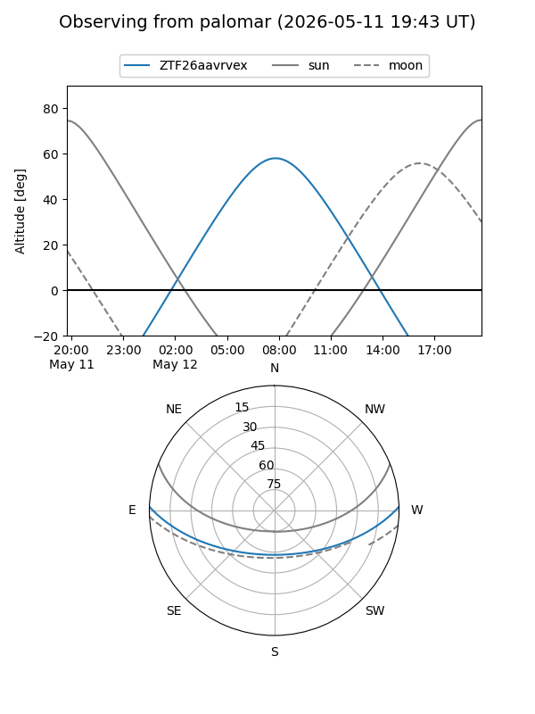

ZTF26aavrvex
Target ZTF26aavrvex at 2026-05-12 08:40
Aliases and brokers:
FINK: link
Lasair: link
ALeRCE: link
alt names
ZTF26aavrvex (ztf,fink_ztf)
Coordinates:
equatorial (ra, dec) = 230.0645,+1.52622
equatorial (HMS+DMS) = 15:20:15.49,+01:31:34.41
galactic (l, b) = (3.6216,+46.11628)
Flags:
Photometry:
last ztfg=19.99
2 ztfg detections
Lightcurve

Visibility


Additional plots